Liam — El Explorador Visionario
Guardián · Explorador VisionarioGuardián de las historias, del sueño y del pueblo. Su lámpara dorada ilumina el camino en la más densa oscuridad y simboliza la claridad y el propósito.
Toca el texto donde quieres empezar. Escape cancela.
Capítulo 04 • Las Llaves del Pensamiento
“Las preguntas poderosas son como llaves maestras. Cada una puede abrir una puerta a una nueva habitación en su mente, donde les esperan tesoros de conocimiento y comprensión.” — El Consejero de Sombreros
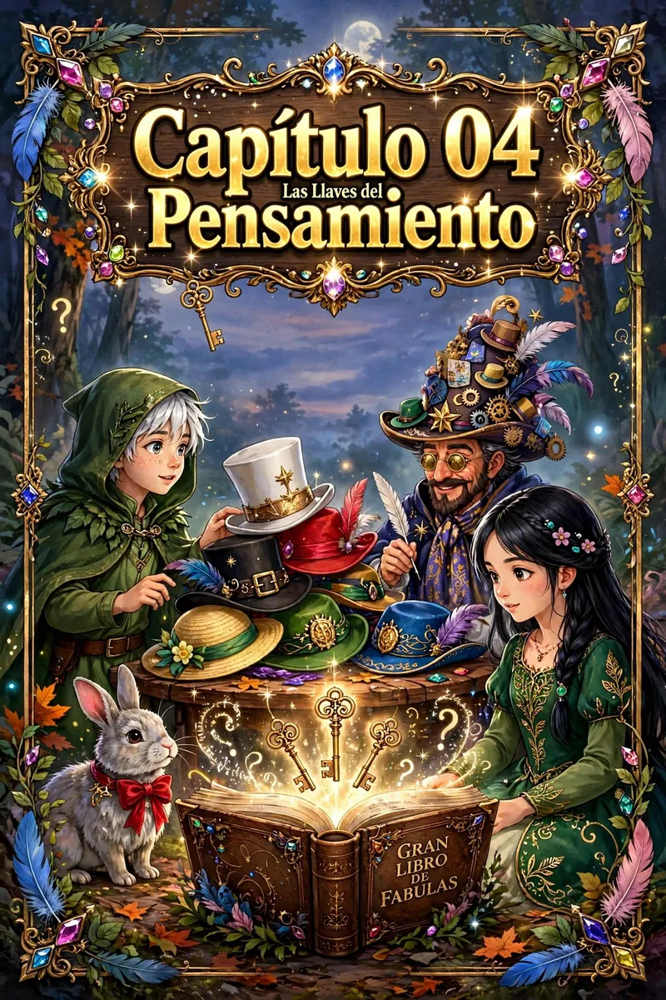
Pensamiento creativo • Preguntas poderosas
Contenido recomendado para Middle Grade (+10 años)
Guardián de las historias, del sueño y del pueblo. Su lámpara dorada ilumina el camino en la más densa oscuridad y simboliza la claridad y el propósito.

Su lámpara transforma las sombras en narraciones llenas de sabiduría. Escucha lo que otros callan y enseña el poder del lenguaje para crear realidades nuevas.

Con una sonrisa simpática y un toque de astucia, reparte sombreros de colores: cada uno es una manera distinta de mirar un problema.

Pequeño, ágil y con un lazo rojo al cuello, aparece de forma enigmática y constante: representa la oportunidad de cambio y el crecimiento continuo.
Fichas completas: Liam · Elara · Consejero de Sombreros · Conejo · Ver todos los personajes
La tarde avanzaba, y una sensación de curiosidad latente se apoderó de Liam y Elara mientras recorrían los senderos del bosque. Desde su encuentro con el anciano sauce llorón, la claridad sobre su misión había crecido. Ahora, una nueva llamada resonaba en el aire, un susurro de descubrimiento que no podían ignorar.
Con el crepúsculo envolviendo el bosque, un leve sonido de campanillas flotó en el aire. Algo se movía entre las sombras: una figura ágil y grácil, tan rápida que parecía un espejismo. Era un conejo grisáceo con un pequeño lazo rojo, que brincaba juguetonamente, deteniéndose para mirar a los jóvenes con ojos brillantes y expectantes.
Liam y Elara siguieron al conejo, que parecía conocer un secreto escondido. Los guió a través de un estrecho sendero cubierto de hojas caídas hasta un claro que nunca antes habían visto. En el centro, una mesa rústica estaba repleta de una variedad de sombreros de vivos colores, cada uno resplandeciente bajo la luz suave del crepúsculo.
Detalle: el conejo gris con lazo rojo es guía entre mundos, símbolo de la curiosidad que no espera.
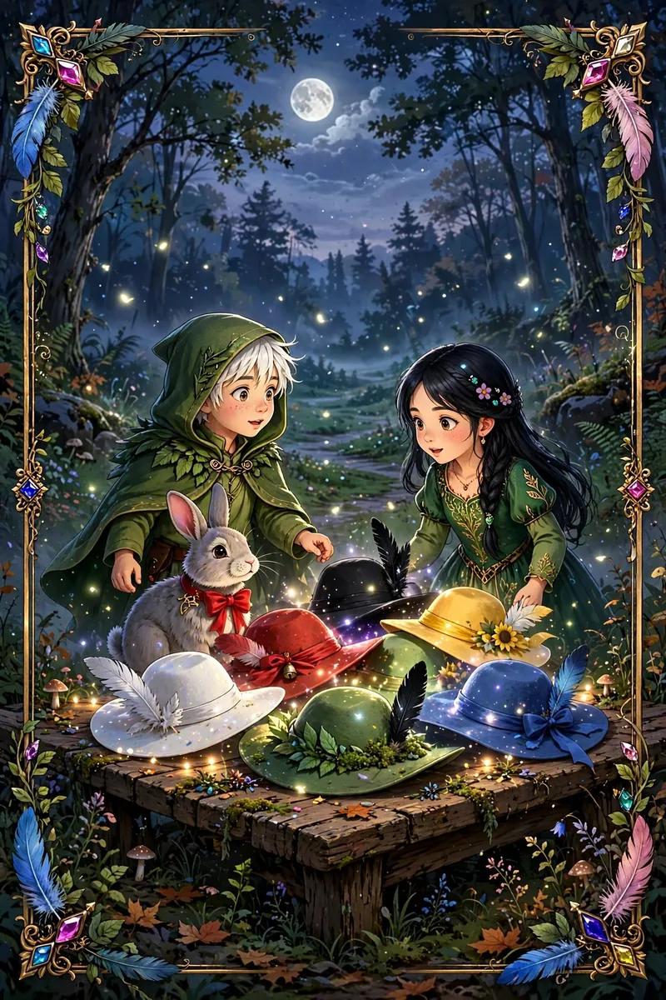
Junto a la mesa, un hombre de aspecto singular se levantó, saludándolos con una sonrisa afable. Su atuendo era extravagante, una combinación de prendas que parecían extraídas de distintos tiempos y lugares. Era conocido como el Consejero de Sombreros, un erudito en las artes de las preguntas y el pensamiento creativo.
“Bienvenidos, viajeros de mentes abiertas,” dijo con un tono cálido. “Aquí, en este rincón escondido del bosque, las preguntas no solo se responden, sino que florecen en nuevas ideas y caminos.”
Elara y Liam se sintieron atraídos por la curiosidad del momento, acercándose a la mesa para examinar los sombreros, cada uno representando una forma diferente de ver el mundo.
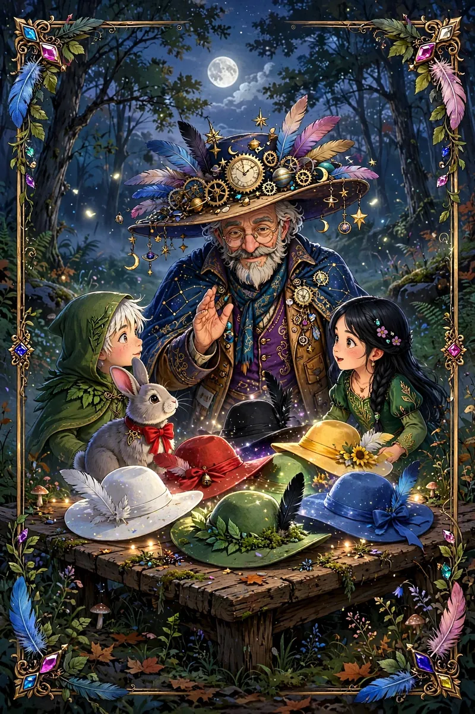
Seis llaves maestras ilustradas. Cada sombrero es un modo de pensar y una voz que cambia tu comunicación. Edward de Bono × Max Lüscher.
01 / 06
Sombrero Blanco • Pensamiento activoPensamiento
Enfoque en los datos y hechos. Con este sombrero, puedes discernir la verdad en su forma más pura, dejando de lado las suposiciones.
Voz / Comunicación — Lüscher
Al ponerse el sombrero blanco, la persona adopta un tono claro, objetivo y racional, como si fuera un narrador imparcial. La voz será precisa, objetiva y directa, como la luz que ilumina la verdad sin adornos.
¿Qué sabemos? ¿Qué necesitamos saber? ¿Cuáles son los hechos?
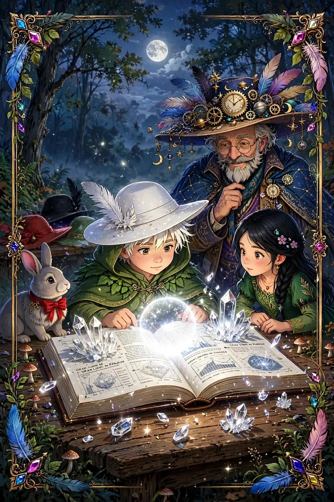
02 / 06
Sombrero Rojo • Pensamiento activoPensamiento
Perspectiva emocional e intuitiva. Este sombrero te sumerge en el mundo de las emociones, permitiéndote sentir y empatizar profundamente.
Voz / Comunicación — Lüscher
Al usar el sombrero rojo, la voz se vuelve cálida, expresiva y llena de emoción, como un fuego que arde con pasión. La comunicación se vuelve visceral, cargada de sentimientos y empatía, como si estuvieras comunicándote desde lo más profundo de tu corazón.
¿Qué siento? ¿Qué intuye mi corazón sin necesidad de justificar?
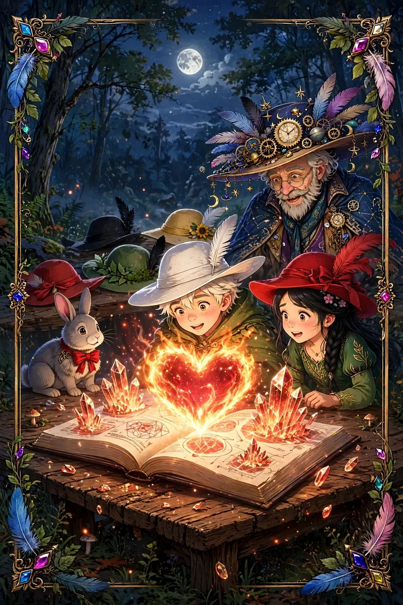
03 / 06
Sombrero Negro • Pensamiento activoPensamiento
Pensamiento crítico y cautela. Aquí se analizan los riesgos y se evalúan las posibilidades con ojo crítico, donde cada paso es medido y evaluado cuidadosamente.
Voz / Comunicación — Lüscher
Al ponerse el sombrero negro, la voz se torna grave, seria y cautelosa, como un tono oscuro que advierte de los peligros. La persona habla de forma analítica, evitando riesgos y enfocándose en los posibles problemas y desventajas de una idea.
¿Qué podría fallar? ¿Qué riesgos debemos considerar?
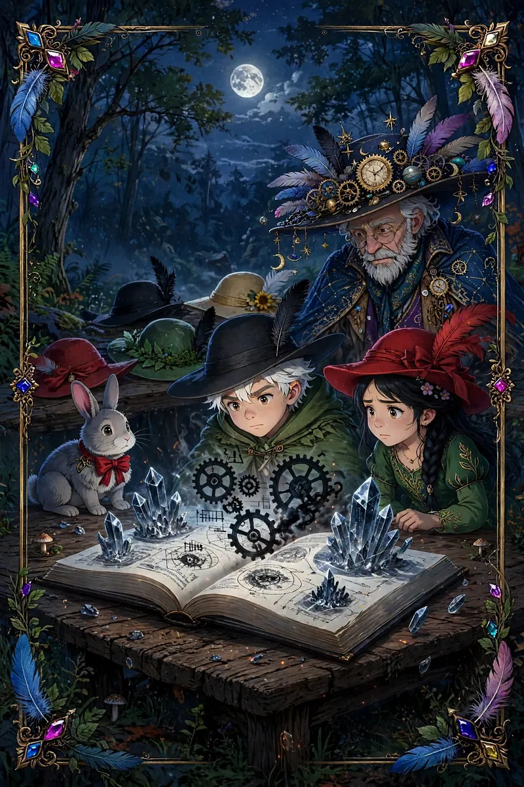
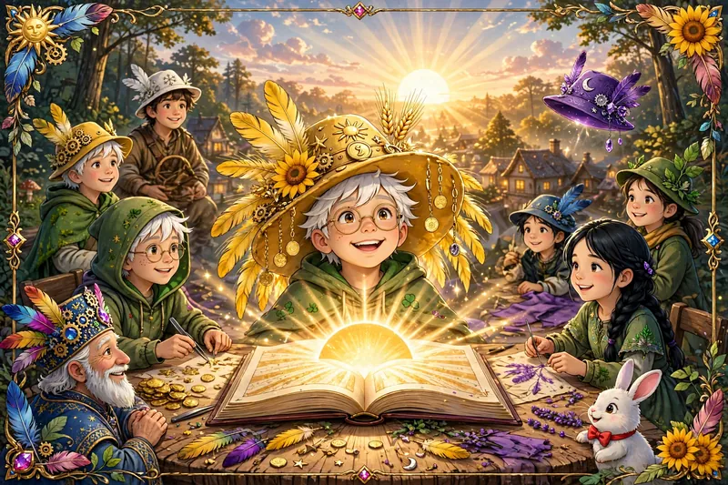
04 / 06
Sombrero Amarillo • Pensamiento activoPensamiento
Optimismo y visión positiva. Con este sombrero, vislumbras los rayos de esperanza y el potencial de cada situación.
Voz / Comunicación — Lüscher
Cuando se coloca el sombrero amarillo, la voz se ilumina con un tono brillante y optimista, como un sol naciente que irradia esperanza. Las palabras son alentadoras, positivas y llenas de energía, buscando siempre lo mejor en cada situación.
¿Qué saldrá bien? ¿Qué oportunidades brillan aquí?
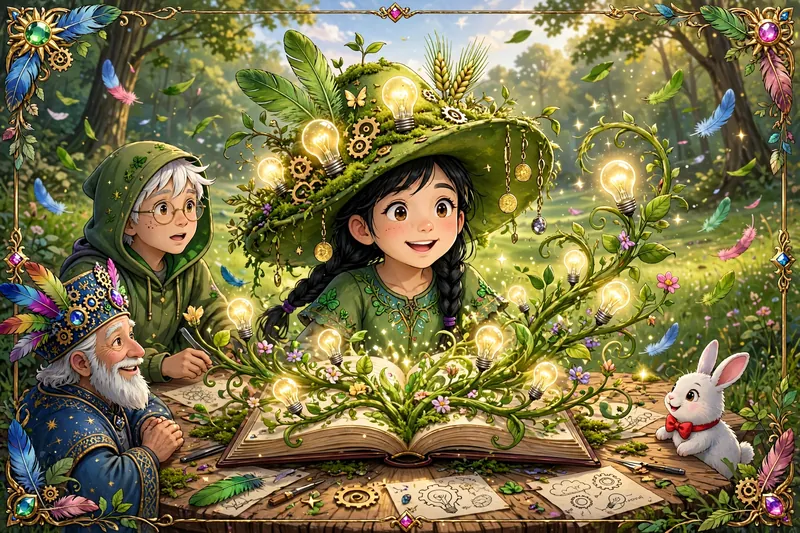
05 / 06
Sombrero Verde • Pensamiento activoPensamiento
Innovación y creatividad. Este es el lugar donde las ideas se multiplican y las soluciones creativas se revelan, un campo fértil para la creatividad sin límites.
Voz / Comunicación — Lüscher
Con el sombrero verde, la voz se llena de entusiasmo y flexibilidad, como un viento fresco que mueve las hojas de los árboles. Las ideas fluyen con libertad, y la persona se expresa de manera abierta, sin restricciones, invitando a la exploración y la invención.
¿Qué pasaría si...? ¿Cómo podríamos hacerlo totalmente diferente?
06 / 06
Sombrero Azul • Pensamiento activoPensamiento
Organización y control del proceso. Este sombrero te ayuda a coordinar tus pensamientos y dirigir tu enfoque. Es el sombrero que organiza el caos y dirige la atención hacia la eficiencia y el orden.
Voz / Comunicación — Lüscher
Al usar el sombrero azul, la voz toma un tono calmado, claro y estructurado, como un cielo despejado. Es una voz que organiza los pensamientos, guía la conversación y mantiene el control sobre el proceso de comunicación, asegurando que cada paso sea claro y preciso.
¿Cuál es nuestro plan? ¿En qué orden pensaremos?
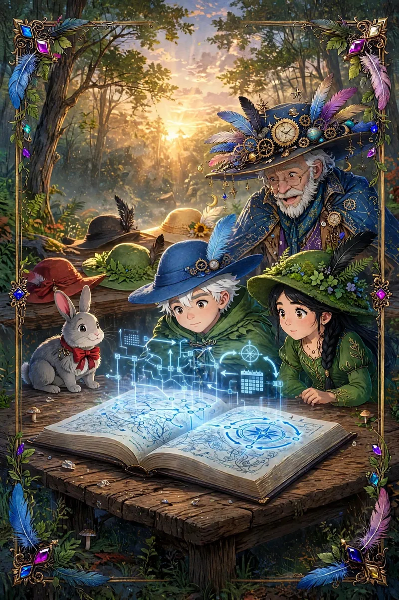
Así, cada sombrero no solo transforma la forma de pensar, sino también la manera en que nos comunicamos, integrando la magia de los colores con las habilidades cognitivas. Al ponerte un sombrero, te adentras no solo en un nuevo enfoque mental, sino en un nuevo modo de ser y expresarte.
Con cada sombrero que probaban, Liam y Elara sentían que las preguntas les abrían puertas a nuevas posibilidades, revelando ideas y soluciones que antes habían pasado desapercibidas. Cada pregunta formulada era una invitación a explorar lo desconocido y desafiar sus propias limitaciones.
Sombrero Blanco — Liam
¿Qué hechos concretos podemos reunir para esclarecer nuestra misión?
Comprendió que la claridad de los datos era esencial para el progreso.
Sombrero Rojo — Elara
¿Qué miedos y esperanzas debemos reconocer para conectar auténticamente con nuestro pueblo?
Reconociendo la importancia de empatizar con los sentimientos de los demás.
Sombrero Verde — Juntos
¿Cómo podemos transformar las historias en herramientas de cambio?
Visualizando nuevas formas de inspirar y motivar a su comunidad.
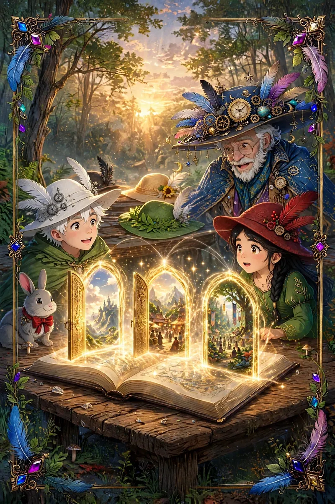
A medida que Liam y Elara probaban cada sombrero, pronto comprendieron que estos no solo los ayudaban a hacer preguntas, sino que también les ofrecían las herramientas necesarias para encontrar respuestas de una manera más profunda y holística. Los sombreros no eran solo un medio para plantear interrogantes, sino que funcionaban como puertas hacia distintos enfoques mentales, cada uno con su propio poder para iluminar áreas invisibles en sus pensamientos.
El sombrero blanco les ofreció la capacidad de analizar hechos de manera objetiva, extrayendo respuestas claras y concretas a partir de la información disponible. Mientras, el sombrero rojo les permitió adentrarse en el reino de las emociones y sentimientos, invitándolos a explorar respuestas que conectaran con su humanidad y su intuición. El sombrero negro les permitió anticipar posibles obstáculos, ayudándoles a encontrar respuestas que consideraran las dificultades que podrían enfrentar.
Por otro lado, el sombrero amarillo les ofreció una visión positiva de las soluciones, ayudándoles a identificar respuestas que se alinearan con el bienestar y el crecimiento. El sombrero verde les permitió ir más allá de lo convencional, revelando respuestas innovadoras y creativas que no habrían surgido sin un enfoque libre y flexible. Finalmente, el sombrero azul les permitió organizar todas estas perspectivas, guiándolos a tomar decisiones claras y estructuradas para avanzar en su misión.
Cada sombrero les brindaba una clave diferente para explorar las preguntas desde ángulos variados, demostrando que las respuestas no son únicas ni fijas, sino que dependen de cómo y desde qué punto de vista se las busca. Así, Liam y Elara aprendieron que la verdadera sabiduría no solo radica en encontrar respuestas definitivas, sino en saber cómo formular las preguntas correctas y estar dispuestos a explorar los múltiples caminos que conducen a la comprensión.
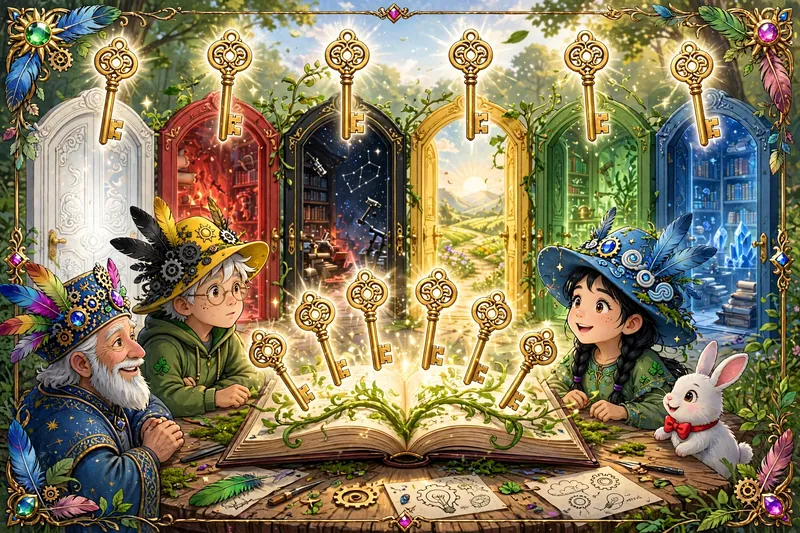
El Consejero observó su progreso con satisfacción.
“Recuerden, las preguntas poderosas son como llaves maestras. Cada una puede abrir una puerta a una nueva habitación en su mente, donde les esperan tesoros de conocimiento y comprensión.”
Elara — Sombrero Azul
¿Cómo podemos estructurar nuestras historias para que cada individuo encuentre su propia verdad en ellas?
Liam — Sombrero Amarillo
¿Qué oportunidades surgirán de los desafíos que enfrentamos?
Liam — Sombrero Negro
¿Qué precauciones debemos tomar al avanzar en este viaje de transformación?
Y con el amarillo vislumbraron esperanza, con el verde innovación sin límites, con el azul organización del caos: cada llave abriendo una nueva habitación de la mente.
Con la luna elevándose en el cielo, el conejo grisáceo los observaba, como si entendiera la importancia de lo que habían descubierto.
“Lleven consigo estas llaves,” aconsejó el Consejero de Sombreros, “y recuerden que las respuestas siempre están esperando ser encontradas. Solo necesitan formular las preguntas adecuadas.”
Renovados por el poder de las preguntas y la magia de los sombreros del pensamiento, Liam y Elara regresaron a su pueblo, listos para compartir su sabiduría con la comunidad. Sabían que al enseñar a otros a formular preguntas poderosas, ayudarían a abrir puertas hacia nuevas posibilidades, iluminando los caminos de todos con la luz de la comprensión.
Y así, los jóvenes guardianes continuaron su misión, llevando consigo la magia de las preguntas poderosas y el poder transformador de los sombreros del pensamiento, guiando a su pueblo hacia un futuro lleno de descubrimientos y crecimiento personal.
Final del Capítulo 04 • Las Llaves del Pensamiento
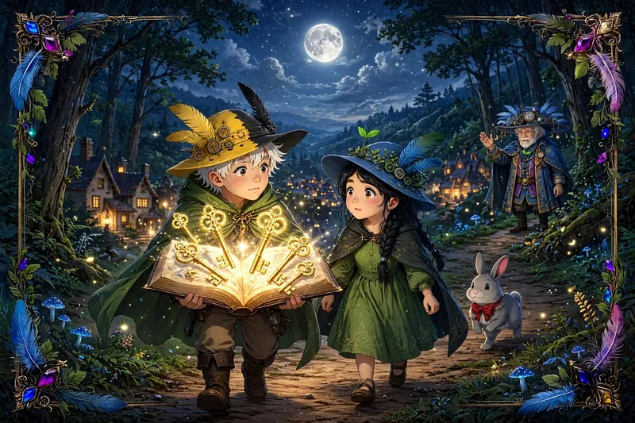
Técnica desarrollada por el psicólogo Edward de Bono en 1985. Su objetivo es fomentar el pensamiento creativo y organizado, ayudando a las personas a abordar un problema desde diferentes perspectivas. Cada “sombrero” representa un tipo de pensamiento distinto, y se trata de adoptar el sombrero adecuado para pensar de una forma específica en cada momento.
Se enfoca en los hechos y la información objetiva. Busca recopilar datos relevantes sin influencias emocionales. ¿Qué sabemos? ¿Qué necesitamos saber? ¿Cuáles son los hechos?
Relacionado con sentimientos e intuiciones. Permite expresar emociones, corazonadas o reacciones personales sin justificación lógica. Reconocer que no siempre debe ser racional.
Evalúa aspectos negativos o razones por las que algo podría no funcionar. Pensamiento cauteloso que identifica riesgos, problemas o dificultades. No es pesimismo, sino análisis realista.
Se enfoca en aspectos positivos, beneficios y oportunidades. Busca lo que puede salir bien, explora soluciones constructivas y analiza ventajas de una idea o proyecto.
Relacionado con la creatividad. Momento de generar ideas nuevas, pensar fuera de lo común y explorar soluciones innovadoras. Fomenta pensamiento divergente.
Encargado de dirigir y coordinar el proceso. Organiza los demás sombreros, establece enfoque y orden en la discusión. Es el “sombrero del facilitador”.
Además de su función inicial, sintetiza toda la información recopilada. Utilizado para cerrar el proceso de análisis y tomar decisiones claras basadas en datos.
Aplicación
En reuniones, cada participante puede “ponerse” diferentes sombreros, uno a la vez, estructurando el debate, evitando prejuicios y abriendo la mente. Puede haber un facilitador (sombrero azul) para dirigir. Muy útil en ámbito empresarial, educativo y resolución de problemas, fomenta enfoque integral y evita que una sola forma de pensar domine.
Enfoque que busca entender cómo las personas se comunican según sus estilos y personalidades. Desarrollada por el psicólogo Thomas Gordon y popularizada por F. L. S. M. Landau. Cada persona tiene tendencia a comunicar diferente, asociada a colores que representan estilos.
Directas, asertivas y muy claras. Enfoque dominante, centrado en la acción y toma de decisiones rápidas.
Características
Decisivos, competitivos, con tendencia a dar órdenes y expectativas altas.
Meticulosas, detallistas y muy racionales. Comunicación basada en hechos, datos y razonamientos lógicos.
Características
Metódicos, ordenados, cuidadosos, con tendencia a analizar profundamente antes de decidir.
Emocional y abierta. Creativas, sociables, optimistas y entusiastas. Muy expresivo, persuasivo.
Características
Extrovertidos, motivadores, con gran capacidad de generar entusiasmo, a veces poco detallistas.
Empáticas, pacientes y muy orientadas a la cooperación. Se enfocan en las necesidades de los demás y buscan armonía.
Características
Pacientes, comprensivos, con habilidades para mediación y resolución de conflictos.
Aplicación
Se utiliza para mejorar la comunicación interpersonal y organizacional, ayudando a identificar el propio estilo y el de los demás. Al reconocer colores, ajustamos nuestra forma de comunicarnos para adaptarnos mejor.
Ejemplo práctico
En una reunión, si un líder (rojo) se comunica muy directa y rápidamente, un miembro azul puede sentirse presionado, ya que prefiere analizar datos. Un compañero amarillo podría sentirse incómodo con la falta de dinamismo. Si el equipo comprende estilos, ajusta la comunicación para ser más efectiva.
Seis llaves para transformar preguntas en realidades.
01 / 06
Preguntas poderosasEn el Coaching Ontológico, las preguntas poderosas son herramientas clave para explorar nuevas posibilidades y transformar nuestra comprensión. Al igual que Liam y Elara experimentaron con los sombreros, tú también puedes usar preguntas para desbloquear perspectivas. Pregúntate: ¿Qué preguntas estás formulando en tu vida diaria? ¿Están abriendo puertas o limitando tus posibilidades? Al practicar la formulación de preguntas que desafíen tus suposiciones y te inviten a explorar lo desconocido, puedes descubrir nuevas oportunidades para el crecimiento y la transformación.
¿Qué preguntas estás formulando hoy? ¿Abren puertas o las cierran?
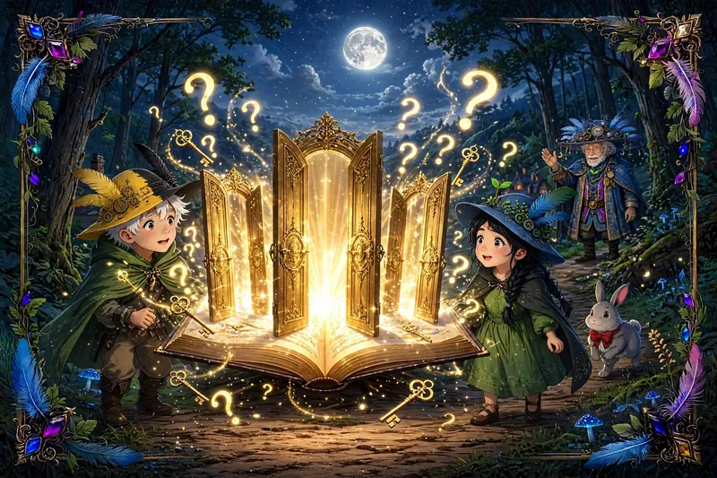
02 / 06
Diversidad de enfoquesElara y Liam aprenden que cada sombrero representa un enfoque diferente. En Coaching Ontológico, se valora la capacidad de cambiar de perspectiva para obtener una visión más completa. Reflexiona sobre cómo puedes adoptar diferentes sombreros: ¿Cuándo necesitas enfocarte en los datos? ¿Cuándo es importante conectar con tus emociones? ¿Cómo puedes equilibrar el optimismo con una evaluación crítica de los riesgos? Al ser consciente de los diferentes enfoques disponibles, puedes abordar los desafíos con mayor flexibilidad y creatividad.
¿Cuándo datos? ¿Cuándo corazón? ¿Cuándo prudencia y cuándo optimismo?
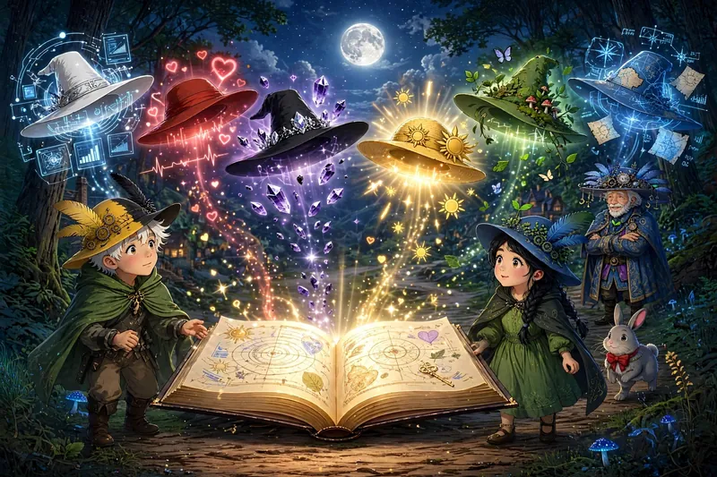
03 / 06
AutoindagaciónEl Consejero nos recuerda que las preguntas son como llaves maestras que abren puertas en nuestra mente. En Coaching Ontológico, la autoindagación es un proceso continuo que nos permite descubrir creencias subyacentes, patrones de pensamiento y emociones que influyen en nuestras acciones. Pregúntate: ¿Qué creencias están guiando tus decisiones? ¿Qué miedos o deseos están presentes en tus pensamientos? Al hacer preguntas que profundicen en tu mundo interior, puedes obtener comprensión más clara de ti mismo y tomar decisiones alineadas con tus valores y propósito.
¿Qué creencias guían tus decisiones hoy? ¿Qué miedos habitan tu interior?
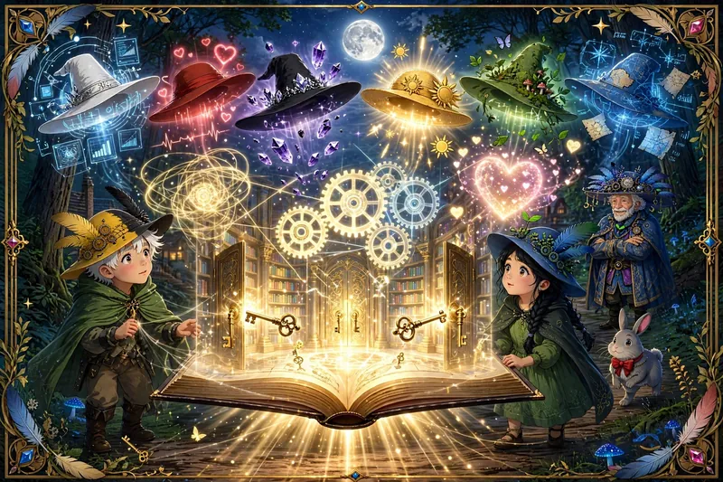
04 / 06
Creación conscienteLiam y Elara comprenden que las preguntas no solo buscan respuestas, sino que también crean nuevas realidades. En Coaching Ontológico, se enseña que nuestra percepción del mundo está moldeada por el lenguaje y las preguntas que elegimos. Si formamos preguntas desde la escasez o el miedo, nuestra realidad se verá limitada. Pero si formulamos preguntas desde la abundancia, la posibilidad y la curiosidad, abrimos un mundo de nuevas oportunidades. Reflexiona: ¿Cómo puedes formular preguntas que te ayuden a crear la realidad que deseas? ¿Qué posibilidades podrías abrir simplemente al cambiar la forma en que preguntas?
¿Desde la escasez o desde la abundancia estás preguntando hoy?
05 / 06
Transformación colectivaLiam y Elara regresan a su pueblo con la intención de compartir la sabiduría de las preguntas poderosas. Esto refleja un principio fundamental: el cambio individual puede catalizar la transformación colectiva. Cuando enseñamos a otros a hacer preguntas poderosas, no solo ayudamos a crecer, sino que fortalecemos la comunidad al fomentar una cultura de curiosidad, exploración y aprendizaje continuo. Considera cómo puedes usar el poder de las preguntas en tu entorno para inspirar a otros.
¿Cómo puede una pregunta tuya inspirar a tu comunidad hoy?
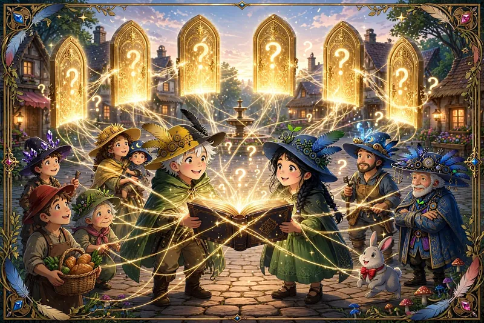
06 / 06
Integración cotidianaFinalmente, el capítulo nos invita a integrar los diferentes sombreros en nuestra vida diaria, utilizando las preguntas para navegar desafíos con sabiduría y creatividad. En Coaching Ontológico, esta integración se traduce en vivir de manera más consciente, donde cada decisión es resultado de reflexión profunda y alineada con metas y valores. Pregúntate: ¿Cómo puedes aplicar el pensamiento creativo en tu vida cotidiana? ¿Qué nuevas soluciones puedes descubrir al cambiar tu enfoque? Este capítulo nos ofrece una rica enseñanza sobre el poder transformador de las preguntas y la importancia de abordar la vida desde múltiples perspectivas.
¿Cómo aplicas hoy el pensamiento creativo en lo cotidiano?
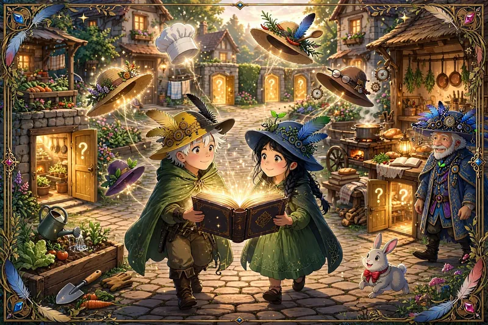
Cierre — 6 llaves. Cada día, un sombrero. Cada sombrero, una pregunta. Cada pregunta, una nueva realidad.
Hacer consciente lo inconsciente a través de preguntas poderosas.
01 / 05
InconscienteEl proceso de autoindagación que atraviesan Liam y Elara refleja una exploración del inconsciente. En psicoanálisis, el inconsciente está lleno de deseos reprimidos, miedos y creencias formadas desde la infancia, que afectan decisiones sin que la persona sea plenamente consciente. Los sombreros, como símbolos de diferentes enfoques, actúan como herramientas para hacer consciente lo inconsciente, práctica clave en terapia.
Cada sombrero lleva a explorar diferentes aspectos de la psique. El blanco permite objetividad que libera de distorsiones, mientras el rojo conecta con emociones y deseos profundos. Proceso paralelo al trabajo psicoanalítico donde el paciente toma conciencia de deseos reprimidos y patrones inconscientes.
Como un iceberg: lo visible sobre el agua es consciente; lo sumergido guarda cadenas y mariposas que aún no nombramos.
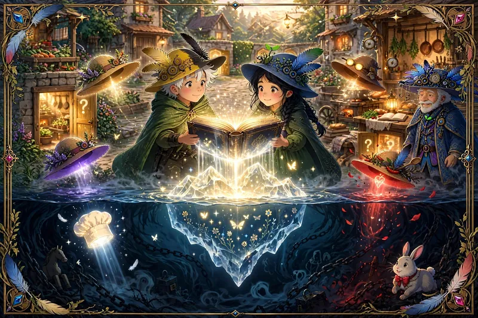
02 / 05
Preguntas transformadorasLas preguntas no son simples herramientas cognitivas, sino principio de trabajo analítico profundo. El psicoanálisis enfatiza que las preguntas pueden desbloquear áreas del inconsciente y comprender motivaciones ocultas.
El concepto de “preguntas poderosas” resuena con técnicas donde el analista guía al paciente a través de asociaciones libres y cuestionamientos que van más allá de lo superficial. Por ejemplo, “¿Qué miedos y esperanzas debemos reconocer para conectar auténticamente?”: una pregunta regresiva que invita a reconocer conflictos emocionales no resueltos.
Una pregunta que abre candados en el abismo.
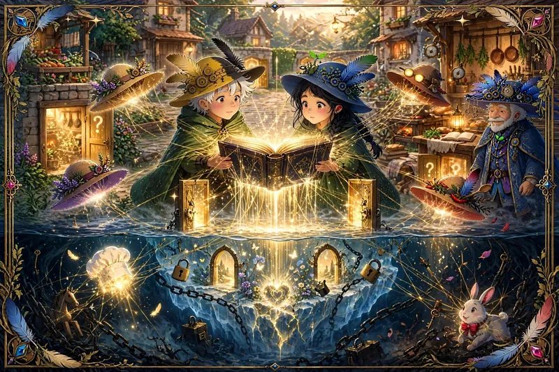
03 / 05
Comunicación e identidadLos sombreros no solo representan modos de pensar, sino formas de comunicación. En psicoanálisis, la comunicación es crucial, ya que expresa estructuras psíquicas y relaciones inconscientes con el mundo.
El hecho de que cada sombrero cambie no solo el enfoque mental, sino el estilo de comunicación, simboliza cómo los modos de pensamiento reflejan aspectos de identidad. Por ejemplo, el sombrero rojo lleno de emoción puede ser representación de emociones reprimidas que influyen en cómo nos expresamos. En contexto psicoanalítico, esto podría representar la transferencia, donde sentimientos inconscientes hacia figuras del pasado se proyectan en el presente.
Rojo es la emoción reprimida que busca voz. Cada sombrero es una identidad que habla desde otro lugar de la psique.
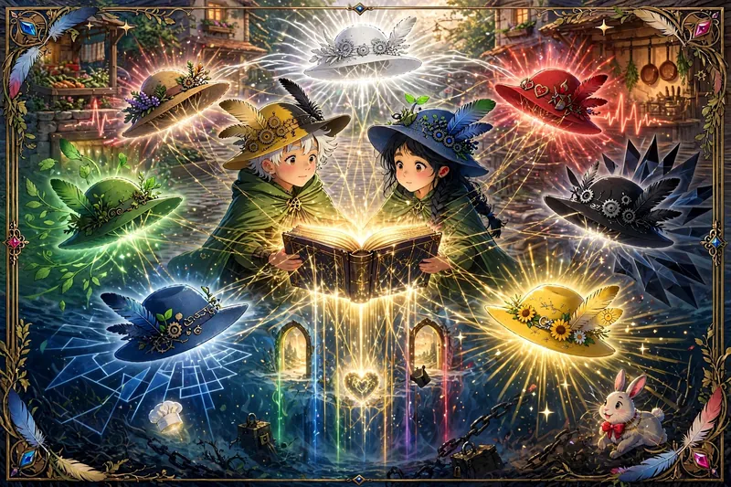
04 / 05
AutotransformaciónLiam y Elara experimentan transformación al usar sombreros, reflejando proceso psicoanalítico de autotransformación que ocurre cuando el individuo se enfrenta a su inconsciente y patrones limitantes. A través de preguntas poderosas y exploración consciente, se liberan de restricciones mentales y emocionales.
En psicoanálisis, la transformación ocurre a través de interpretación y trabajo con el inconsciente, llevando a integración de partes fragmentadas de la psique. Cada sombrero ofrece oportunidad de transformar percepción de realidad y, por ende, mundo interior.
De un corazón fragmentado con cadenas a un corazón de puzle dorado e integrado: cada sombrero ensambla una pieza.
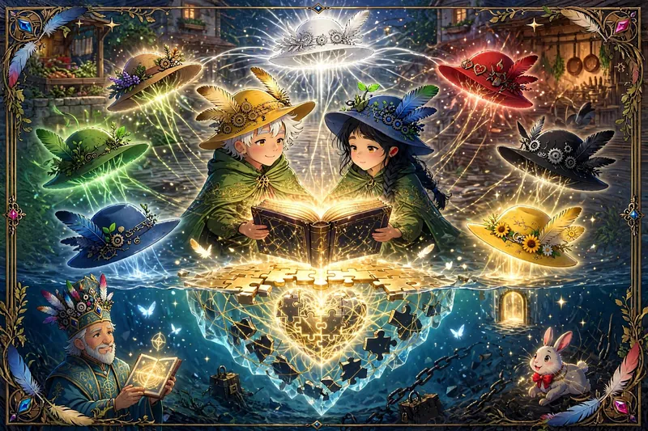
05 / 05
Realidades psíquicasEl psicoanálisis postula que nuestra realidad psíquica está influenciada por las preguntas que nos hacemos. Si son limitadas o dirigidas por miedos inconscientes, nuestra percepción estará restringida. Si formulamos preguntas desde apertura, posibilidad y curiosidad, como Liam y Elara, desbloqueamos nuevas dimensiones.
Esta idea conecta con teoría de la interpretación en psicoanálisis, que sostiene que al cambiar cómo interpretamos experiencias a través de nuevas preguntas, podemos cambiar nuestra realidad psíquica y, por extensión, externa.
A través de esta historia, se nos invita a reflexionar sobre el poder transformador de las preguntas y explorar nuestra psique desde diversas perspectivas.
Preguntas desde el miedo crean cadenas. Preguntas desde la curiosidad crean cristales dorados y mariposas.
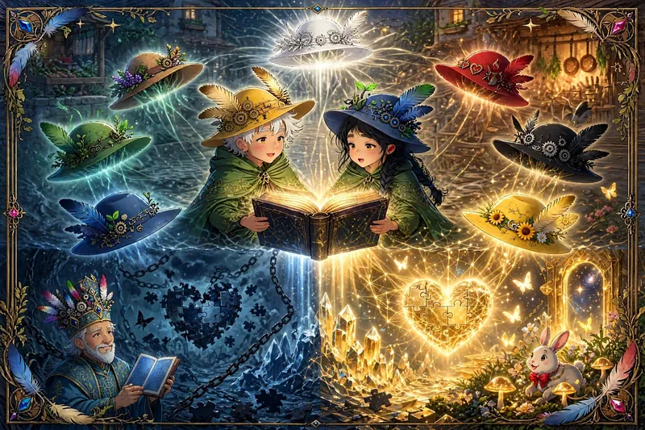
Toca cada ejercicio para ver u ocultar sus pasos.
Instrucciones
Instrucciones
Instrucciones
Instrucciones
Instrucciones
Cinco llaves para practicar esta semana. Lo que escribas se guarda solo en este dispositivo y no se envía a ningún servidor.
Elige una situación que te preocupa. Lista SOLO hechos verificables, sin interpretación. ¿Qué viste, oíste, qué datos tienes? ¿Qué datos te faltan?
0 de 2000 caracteres
Sobre esa misma situación: ¿Qué emociones aparecen sin filtro? Nómbralas en una frase: “Siento...”. No las justifiques. ¿Qué te dice tu intuición en una palabra?
0 de 2000 caracteres
¿Qué podría salir mal si actúas? Lista 3 riesgos reales. Luego, para cada uno, escribe una precaución concreta. Cautela no es miedo, es cuidado.
0 de 2000 caracteres
Si todo saliera bien, ¿qué oportunidad nace? Ahora fuerza 3 ideas absurdas, sin censura: ¿cómo resolverías esto si fueras un niño, un mago, un conejo con lazo rojo?
0 de 2000 caracteres
Organiza tu pensamiento: ¿Qué sombrero necesitas ponerte primero mañana? Escribe tu plan en 3 pasos: 1) Qué sombrero, 2) Qué pregunta harás, 3) Qué acción pequeña tomarás.
0 de 2000 caracteres
Estampas en pixel art de lo que aparece en «Las Llaves del Pensamiento». Toca una para verla más grande.


“Las respuestas siempre están esperando ser encontradas. Solo necesitas formular las preguntas adecuadas.”
← Capítulo 03: La Luz InteriorCapítulo 05: El Despertar de las Historias Ocultas →Volver al inicio